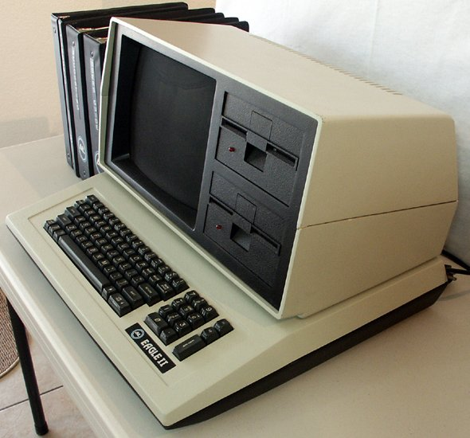
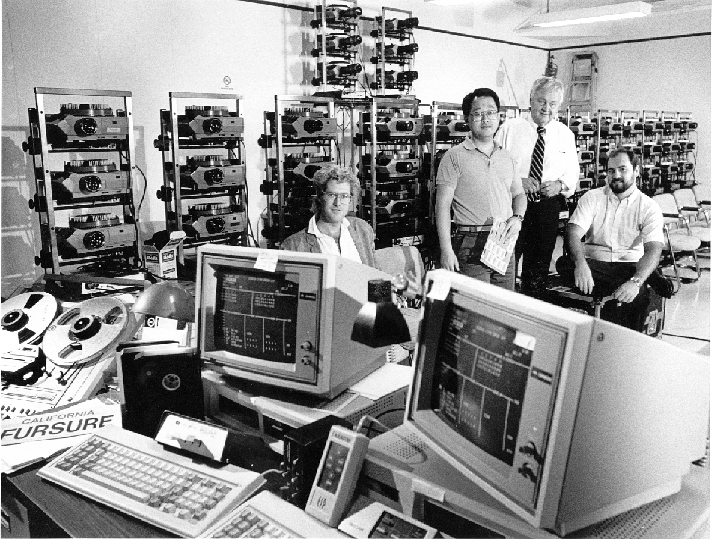

AVL Eagle / ShowPro Multi-Image Controller
A CP/M computer that choreographed thirty slide projectors with cue lists and proprietary timecode

Overview
Before PowerPoint, corporate and trade-show presentations were multi-image: dozens of 35mm slide projectors aimed at one wide screen, cross-fading so that still photographs appeared to move. Programming a show meant writing a timed list of projector and lamp commands and locking it to a soundtrack. Audio Visual Laboratories (AVL), founded by Gary Kappenman in New Jersey in the early 1970s, made the dedicated controllers that did this — first the ShowPro III and V, then, in 1980, the Eagle: the first non-dedicated multi-image controller, a general 4 MHz Zilog Z80A CP/M 2.2 business computer with an audio-visual interface board and one or two 5.25-inch floppy drives. A single Eagle could drive up to thirty Kodak Ektagraphic projectors, five 16mm film projectors, and twenty auxiliary control points (room lights, strobes, tape rewind). The programmer worked at the keyboard with headphones on, listening to the soundtrack and pressing keys in time, effectively performing the show into memory. The output of the interface was not a screen but a darkened lecture hall full of machinery.
Deep dive
The Eagle ran PROCALL (PROgrammable Computer Audio-visual Language Library), and its vocabulary is the exhibit. Forward and Reverse rotate a slide tray one slot, lifting the current slide out, turning the tray, and dropping the next one in while a shutter masks the lamp; a cycle takes roughly 0.9–1.5 seconds depending on the projector. Alt advances nothing and changes only lamp state — the trick that lets two projectors alternate rapidly and read as motion. Cut, Hard Cut (via the shutter), Soft Cut, Fade, Dissolve (programmable from one to thirty-two seconds), and Freeze, which stops a fading lamp mid-intensity so one projector can hold a background while another dissolves over it. Wait X inserts padding; Time X binds a cue to a timecode value; Loop and Blink let the controller run a repeating sequence while it drives other projectors.
Commands left the Eagle as two telemetry streams called PosiTrak, on RCA or XLR connectors, down the same kind of cabling used for sound. Each stream drove up to five outboard boxes called Doves, and each Dove in turn steered up to three Ektagraphic projectors (plus two dry-contact closures). This is a control interface wearing the costume of an audio interface — an elegant, and eventual, liability.
The timed cue list chased a biphase timecode called ClockTrak, read from the control channel of a multitrack analog tape deck. ClockTrak was similar to but deliberately incompatible with SMPTE video timecode. When shows began to incorporate video, programmers abandoned ClockTrak for SMPTE — a tidy case of a proprietary synchronization standard losing to the open one.
Every tray in a show reserved slot 80 for an alignment grid slide. Before programming began, all projectors — up to thirty of them — were registered to that identical grid so their images would overlap precisely on the wide screen. The alignment was enforced by media convention, not by software: a physical protocol for making a room full of independent machines agree on one geometry.
Multi-image programming could take "a few hours to days, weeks and sometimes months." A photograph from the 1987 Ford New Car Announcement Show in Detroit shows the programming stations — AVL Eagle Genesis computers in the foreground — with named producers, art directors and a programmer behind them. This is the interaction the museum wants to hold: a performer listening through a soundtrack, pressing keys in rhythm to build a cue list that a room full of projectors will later execute.
Team & pioneers
- Gary Kappenman. Founder of Audio Visual Laboratories; introduced the first microprocessor-controlled multi-image programming computers (ShowPro III and V).
- Audio Visual Laboratories (AVL). New Jersey manufacturer of multi-image control equipment; the Eagle was its first non-dedicated controller.
- Eagle Computer, Inc. The company spun off from AVL to sell the Eagle line as CP/M business computers (1978–1986).
Media

